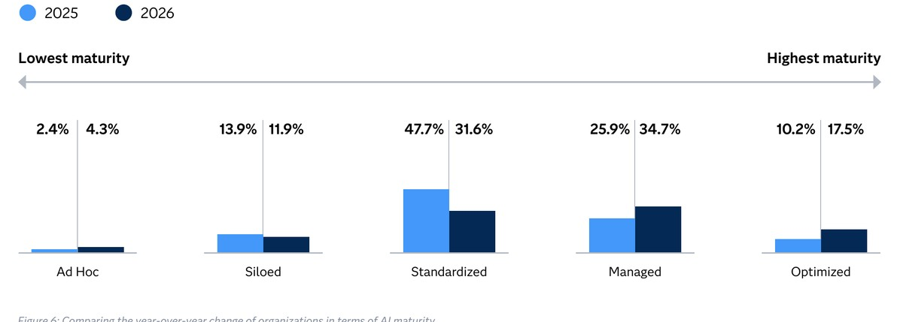

Executive Summary
This article reads the Korea portion of the Data and AI Impact Report: The New Economics of Trust, which SAS released on September 30, 2026. Korean coverage reached first for one number, the trust gap. How much a company believes in its own AI, set against how much of that AI it actually manages, moved from a distance of 28.9 points to 1.5 points in a single year. Very nearly gone.
Both numbers travelled toward the middle to meet there. Management capability rose 12.1 points, from 45 to 57.1. Over the same stretch, perceived trust came down 15.3 points, from 73.9 to 58.6. Of the 27.4 points that closed, the bigger share was supplied by the side that fell. One sentence about a shrinking gap therefore carries two readings at once: Korean companies made their AI more worth believing in, and Korean companies believe in their AI less than they used to.
Sections 1 through 4 stay with figures printed in the SAS report and in the Korean coverage of it. Section 5 reads those figures again through the eyes of someone who handles data for a living, and that reading belongs to this article.
Key Figures
Four numbers carry the Korean results. Two of them say why the gap got smaller; the other two say what is still empty inside that gap.
Source: ZDNet Korea (2026-09-30) and Digital Daily (2026-09-30).
1.5 pts
Korea's AI trust gap
It stood at 28.9 a year ago. Perceived trust minus management capability
15.3 pts
How far perceived trust fell
From 73.9 to 58.6, larger than the 12.1 points capability gained in the same year
1.9%
Korean firms that mandate data quality control
The share applying quality procedures to every AI project without exception
42.6%
Korean firms running agentic AI
The share already using AI that decides and acts on its own
A 1.5-Point Gap Between What and What?
SAS published the report on September 30 under the title Data and AI Impact Report: The New Economics of Trust. This is the second annual edition, and it draws on research insights from the market research firm IDC. Respondents number 2,699 across 28 countries. Each of them knows or influences decisions about their own company's data and AI work, and banking, insurance, life sciences and the public sector sit at the centre of the sample.

What the survey calls a trust gap is a subtraction between two scores. One side asks how far a company believes in the AI it runs, which the report labels perceived trust. The other asks how much of that AI the company actually manages, which it labels management capability. Capability is built from five items scored out of 100: data quality and governance, model governance and oversight, explainability and fairness, responsible AI policy, and audit and accountability.
Laid out by year, the two Korean scores make the subtraction come out exactly. Last year, perceived trust of 73.9 minus management capability of 45 gave 28.9. This year, perceived trust of 58.6 minus capability of 57.1 gives 1.5. Asked whether they manage as much as they believe, Korean companies fell 29 points short last year and fall 1.5 points short now.
One more line runs across the capability side. SAS marks companies averaging 80 or above on the five items as trustworthy AI leaders. Korea's 57.1 this year sits 22.9 points under that line. A year of climbing 12.1 points has still not carried Korean companies inside it.
There is something this number plainly does not say. A gap is the distance between two scores, never their height. A result of 1.5 means perceived trust and management capability met in the high fifties, not that they met somewhere high.
What Fell Outweighs What Rose
Across the 27.4 points of narrowing, the two scores travelled very different distances. Management capability climbed from 45 to 57.1, a gain of 12.1. Perceived trust dropped from 73.9 to 58.6, a loss of 15.3. More than half of the closed distance was supplied by the descending side.
▲ Source: Korean figures from the SAS Data and AI Impact Report (2026-09-30), as carried by ZDNet Korea and Digital Daily.
A falling score need not read as bad news only. In a year when perceived trust stood at 73.9, management capability stood at 45, which makes 73.9 a number that had run out ahead of its evidence. If twelve months of actually running AI led companies to reassess their own systems and write down 58.6, what came down was the expectation rather than the capability.
The same pattern turns up in the survey's global figures. Trust falls as autonomy grows. Generative AI, which writes text or makes images for a person, draws 76% trust; agentic AI, which decides and acts by itself, draws 66%. People believe in a system less as more of the work is handed to it.
Experience does not always push sentiment in one direction, though. Gallup asked individuals across thirty-seven countries and found that trust rose alongside frequency of use, with the peak of worry also sitting inside the user group. What SAS measures here is not how a person feels about AI but what score an organisation gives the AI it owns. Better to keep the two results apart when reading them together.
Oversight Climbed, Data Quality Stayed Put
Inside those 12.1 points, movement was uneven. Korean coverage published scores for four of the five items that make up management capability. One jumped sharply, one sat exactly where it had been all year, and the remaining two managed only slight gains.
| Item | 2026 score | Change on the year |
|---|---|---|
| Responsible AI policy | 59.5 | No change |
| Model governance and oversight | 55.8 | Up 9.3 — largest of the items |
| Explainability and fairness | 54.6 | Slight gain |
| Data quality and governance | 53.9 | Slight gain |
| Audit and accountability | Not in Korean coverage | — |
▲ Korean companies. Source: Digital Daily (2026-09-30) and Datanet (2026-09-30). The five item names match the composition of the SAS trustworthiness index.
Audit and accountability occupies the fifth row, where the score is blank. That item asks whether a company can go back over a decision its AI made and show who approved it and which data went into it. It is one of three items the report names alongside revenue, yet no Korean score for it turned up in domestic coverage. Reading four cells instead of five is a limit of this article.
The cell that jumped is model governance and oversight. Deciding who signs off on a model, who watches it, and what procedure halts it when something breaks is the work behind that item. Its 9.3 points lead the four, and a good deal of the 12.1-point rise across capability can be laid at this cell. What Korean companies really built over twelve months was mostly this oversight system.
Yet the thing that system is supposed to oversee barely moved. Data quality and governance sits at 53.9, lowest of the four, and explainability and fairness sits at 54.6. Both registered only slight gains. Rules now exist for approving and watching a model, while the cells covering what that model eats and what grounds its answers have not budged out of the mid-fifties.
Responsible AI policy at 59.5, logged as unchanged across the whole year, reads as part of the same picture. It is the highest of the four scores and the only one that stayed perfectly still. Writing the documents was more or less finished last year, and nobody has gone back to them since.
Agentic AI Runs Ahead of the Data Checks
The two sharpest numbers in the survey stand outside the scores altogether. First comes the adoption rate: 42.6% of Korean companies have already brought in agentic AI, the kind that decides and acts by itself. Second comes the verification rate: 1.9% of Korean companies make data quality control a required step on every AI project.
Both figures come from the same respondent pool, but they measure different things. One asks how widely something is used; the other asks whether a procedure holds without exception. Dividing one by the other and quoting a multiple would overstate the case. Place them side by side, though, and the ordering shows. Bringing in AI that moves on its own happened first; building a procedure that checks every piece of data that AI will use has not yet reached one company in ten.
The global responses say what occupies that empty space. Among users surveyed, 97.2% override an AI recommendation rather than following it as given, at least in some cases. The reason they point to is that the system fails to show why it reached that judgement. Worldwide, only 17.5% of organisations have a data foundation fully built to the standard agentic AI demands, and the report attributes weaker outcomes to that shortfall.

Foundations and mandates move together, which the same survey also records. Organisations with an optimised data foundation were six times more likely to have mandatory controls on data quality and explainability. Whether rules came first and pulled the foundation along, or the foundation made the rules possible, cannot be settled with this figure. It does make Korea's 1.9% hard to read as a problem of rules alone.
Retracing an AI judgement requires two things to survive. A person needs to know what the system looked at to answer that way, and whether those materials were sound. Explainability at 54.6 marks the first; data quality at 53.9 and a 1.9% mandate rate mark the second. That the cell climbing hardest of the four was model oversight suggests Korean companies built the system that oversees first and left the materials it oversees for later.
SAS Korea's managing director pointed to the same ordering at the launch. Turning AI expansion into real business results, he said in the Korean release, means explaining the grounds for an AI judgement in step with building governance, and completing a data foundation that carries accuracy and reproducibility. Building the management system and completing the data foundation are placed as two tracks meant to run abreast.
Why Pebblous Is Watching This Survey
The survey dwells at length on the relationship between trust and money. Among companies that invested in trustworthy AI, 62% said they saw strong returns from their AI work, against 4% of the rest. The report writes that up as a 15-fold difference. The same report, however, measured the gap across 13 business outcome metrics covering revenue growth, cost savings and customer experience, and there the average difference is 1.85 times. 15x is a difference between shares of respondents saying they saw strong returns; 1.85x sits closer to the size of the actual benefit. Companies with an optimised data foundation were four times more likely to say they expect strong returns.
These figures point at particular cells rather than at the scoreboard as a whole. Three items get named in the report: governance, data quality and auditability. Companies leading on those three saw at least double the return from their AI work, while fewer than one in twenty of the trailing group could say the same. Of those three, Korea raised one this year, governance. Data quality remains at 53.9, lowest of the four scored items, and auditability has no confirmed score at all.
Anyone who has handled data will recognise this ordering. Rules and approval routes go up relatively fast. Once someone names the owner, draws the sign-off chain and writes down the review interval, the document is complete. Recording which data a model consumed, where that data came from and what condition it was in, by contrast, means changing systems. So it keeps getting pushed back. A 9.3-point rise in model governance beside a slight gain in data quality is close to a scoreboard picture of that postponement.
Some places have grabbed the other end first. Singapore chose to build trust as a system of evidence rather than a declaration, stringing policy, infrastructure and verification into one line. Seoul, picking its 100 high-value datasets, put the work of fixing data so AI can use it straight away into the stage before release. Neither case added supervisory rules; both repaired the material being supervised.

Pebblous keeps repeating one line whenever AI-Ready Data comes up. Where the data underneath has not been verified, even oversight is not verification. You can find out who approved a model and still be unable to retrace what grounded its answer, because the record was never kept on the material side. When 42.6% of companies run agentic AI and 1.9% apply quality control to every project, the materials for retracing are not yet inside the company.
So this survey leaves a reader with one question. Of two possible changes at your own company — believing in AI less, and handling data better — which one raised the score this year? Both shrink a gap, and what remains the following year differs. Room created by expectations coming down gets spent once; room created by repairing the materials accumulates.
Thank you for reading this far. The Korean figures in the report can be checked in the coverage by ZDNet Korea and Digital Daily, and the global figures and methodology on the official SAS page. We would be glad to hear whether a data quality check hangs on every AI project in your organisation or only on the important ones, so count them up and tell us.
References
Korean Coverage
- 1.ZDNet Korea. (2026). "Korean enterprises show declining AI trust gap; next challenge is data quality." September 30, 2026.
- 2.Digital Daily. (2026). "Korean Companies' AI Trust Gap Narrows from 28.9 to 1.5 Points in One Year, Data Quality and Explainability Remain Challenges." September 30, 2026.
- 3.Datanet. (2026). "Korean Firms' AI Trust Gap Narrows Sharply, Data Quality and Explainability Remain Challenges." September 30, 2026.
- 4.Electronic Times (etnews). (2026). "SAS: Korean Firms' Confidence in AI Safety Rises as Oversight Strengthens." September 30, 2026.
SAS Official Sources
- 5.SAS Institute Inc. (2026). "Organizations with trustworthy AI practices are 15 times more likely to see strong ROI, per study findings." Press release, September 30, 2026.
- 6.SAS Institute Inc. (2026). "Data and AI Impact Report: The New Economics of Trust." With research insights from IDC.
International Comparisons
- 7.europawire. (2026). "SAS research finds UK organisations accelerating enterprise AI adoption while business returns trail trust." October 2, 2026.
- 8.Global Government Forum. (2026). "Government organisations over-relying on unproven AI, global study finds." April 27, 2026.